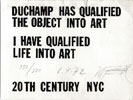

Schleiermacher
"Alle Menschen sind Künstler."
"Alles, was der Mensch als seine Erweiterung aneignend bildet, muß er kunstmäßig bilden."
Friedrich Schleiermacher: Brouillon zur Ethik, 1805/1806. [Ed. Braun, II, p. 184.]
Schleiermacher's Verdienst ist es u.a., in dieser Situation gezeigt zu haben, daß der Mensch nicht gänzlich das Gebiet der Kunst verlassen kann. Denn so wie der, der schreibt, seine bestimmte handschrift hat, so symbolisiert sich der Mensch selbst noch in und an seine Werken der Theorie und der Praxis. "Alle Menschen sind Künstler" – dies ist nicht nur der dialektische Aufhebung des Geniebegriffs, indem das Genie nicht mehr der einsame große Einzelne ist; sondern der Satz schließt ein, daß alle Werke des Menschen etwas verraten, was über ihren beabsichtigten Zweck hinausgeht.
Gunter Scholz: Schleiermachers Musikphilosophie. Göttingen: Vandenhoeck & Ruprecht, 1981, p. 152.
Maeterlinck
"Il est impossible à l'homme de n'être
pas grand et admirable. Ce que pense la pensée n'a aucune importance
à côté de la vérité que nous sommes et qui s'affirme en silence."
Maurice Maeterlinck: Le Trésor des Humbles. Ch. VII.
Emerson. Paris: Mercure de France, 1896.
[54th edition, 1908,
p. 126.]
 More
extensive quotes from Maeterlinck's Trésor
des Humbles. More
extensive quotes from Maeterlinck's Trésor
des Humbles.
Havelock Ellis
"However we look at it, we
see that Man, whether he works individually or collectively,
may conveniently be regarded, in the comprehensive sense, as
an artist, a bad artist, maybe, for the most part, but still
an artist. His civilisation – if that is the term we choose
to apply to the total sum of his group activities – is
always an art, or a complex of arts."
Havelock Ellis: The Dance of Life,
Ch. 7, sect. III. 1923.
Coomaraswamy
"The artist is not a special kind of man,
but every man is a special kind of artist. "
A.K. Coomaraswamy: The Transformation of Nature in Art.
Cambridge, MA: Harvard University Press, 1935.
Collingwood
"Every utterance and every gesture that each of us makes is a work of art."
R.G. Collingwood: The Principles of Art. Oxford: Oxford University Press, 1938, p. 285.
Ben
|
"La Vie est Art"
Ben Vautier, early
1960's
|
Timm Ulrichs
"Kunst ist Leben. Leben ist
Kunst."
Timm Ulrichs. In: Announcement:
Das erste lebende Kunstwerk. Franfurt/M.: Galerie Patio, 1966.
Wolf Vostell
 |
"Duchamp has qualified the object
into art.
I have qualified life into art."
Postcard by Wolf Vostell, 1972
|
Joseph Beuys
"Jeder Mensch ist ein träger von Fähigkeiten, ein sich selbst bestimmendes Wesen, der Souverän schlechthin in unserer Zeit. Er ist ein Künstler, ob er nun bei der Müllabfuhr ist, Krankenpfleger, Arzt, Ingenieur oder Landwirt. Da, wo er seine Fähigkeiten entfaltet, ist er Künstler. Ich sage nicht, daß dies bei der Malerei eher zur Kunst führt als beim Maschinenbau ... [...] Wer richtig und behutsam vorgeht, findet einen Bereich, in dem er, obschon er sich dauernd abhängig fühlt, doch frei ist und seine Abhängigkeit, unter der er leidet, beseitigt und einen neuen Schritt tut."
Joseph Beuys. In: Peter Brügge: "Die Mysterien finden im Hauptbahnhof statt. SPIEGEL-Gespräch mit Joseph Beuys über Anthroposophie und die Zukunft der Menschheit." Der Spiegel, # 23 (June 4), 1984.
"Wenn du ein waches Auge hast für das Menschliche, kannst du sehen, dass jeder Mensch ein Künstler ist. Ich war jetzt in Madrid und habe gesehen, wie die Männer, die bei der Müllabfuhr arbeiten, große Genies sind. Das erkennt man an der Art, wie die ihre Arbeit tun und was für Gesichter sie dabei haben. Man sieht, daß sie Vertreter einer zukünftigen Menschheit sind."
Joseph Beuys. In: Ein Gespräch. Beuys, Kounellis, Kiefer, Cucchi. Zürich: Parkett-Verlag, 1986, p. 109 ff.
"Also wir leben ja alle noch
in einer Kultur, die so sagt: Da sind Künstler und da sind Nichtkünstler.
Das wird dann unmenschlich, dadurch gibt es den Begriff der Entfremdung
zwischen den Menschen. Nein, jeder Mensch vollzieht permanent materielle
Prozesse. Er stellt immerfort Zusammenhänge her. Auch er gibt, wenn
er einem anderen Menschen ausweicht oder wo er sich im Gedränge
verhält, es gibt immer, sagen wir mal, Formprozesse. Tänzer machen
ja auch nichts anderes, als sich bewegen, auf ihren Füßen. Und Menschen
im Straßenverkehr sind im Grunde auch Tänzer. "
Joseph Beuys. In: Volker
Harlan: Was ist Kunst? Werkstattgespräch mit
Beuys. Stuttgart, 1987,
p. 27.
"Die Erweiterung des Kunstbegriffs
bezieht sich auf den Menschen und damit auf alle Vorgänge, die der
Mensch veranlaßt. "
Joseph Beuys. In: Hiltrud
Oman: Die Kunst auf dem Weg zum Leben – Joseph
Beuys. Weihnheim/Berlin,
1988, p. 96.
|